In this analysis, the datasets "food_consumption" and "drinks" are examined to determine potenital relationships, summary statistics, and visual analyses. The dataset "food_consumption" contains data from the Food and Agriculture Organization of the United Nations documenting data on countries around the world, specific food categories, the consumption of these foods (kg/person/year), and lastly, the CO2 emission (kg CO2/person/year). The dataset "drinks" contains data from the World Health Organization and Global Information System on Alcohol and Health which contains data on countries around the world, beer servings (per person), spirit servings (per person), wine servings (per person), and the total liters of alcohol consumed by a person. These two datasets are interesting to me because I am currently in a sociology course titled "Creating a Sustainable Society" and in this course, we talk a lot about CO2 emissions and the anthropogenic effects that are causing global warming. These datasets can connect CO2 emissions to two important things humans really care about: food and alcohol! Food consumption is known to have potential affects on CO2 emissions, mostly through food waste and certain types of foods (meat, dairy, etc). However, I am interested in determining if high alcohol consumption has a relationship with CO2 emissions. I have learned that the effects of climate change can put extreme strains on the alcohol industry. Furthmore, I am expecting to see the countries with higher alcohol consumption (whether being beer, spirit, or wine) have a higher rate of CO2 emissions.
food_consumption <- readr::read_csv("https://raw.githubusercontent.com/rfordatascience/tidytuesday/master/data/2020/2020-02-18/food_consumption.csv")
library(dplyr)
library(tidyr)
library(stringr)
library(tidyverse)
library(fivethirtyeight)
glimpse(food_consumption)## Rows: 1,430
## Columns: 4
## $ country <chr> "Argentina", "Argentina", "Argentina", "Argentina", "Ar…
## $ food_category <chr> "Pork", "Poultry", "Beef", "Lamb & Goat", "Fish", "Eggs…
## $ consumption <dbl> 10.51, 38.66, 55.48, 1.56, 4.36, 11.39, 195.08, 103.11,…
## $ co2_emmission <dbl> 37.20, 41.53, 1712.00, 54.63, 6.96, 10.46, 277.87, 19.6…glimpse(drinks)## Rows: 193
## Columns: 5
## $ country <chr> "Afghanistan", "Albania", "Algeria", "An…
## $ beer_servings <int> 0, 89, 25, 245, 217, 102, 193, 21, 261, …
## $ spirit_servings <int> 0, 132, 0, 138, 57, 128, 25, 179, 72, 75…
## $ wine_servings <int> 0, 54, 14, 312, 45, 45, 221, 11, 212, 19…
## $ total_litres_of_pure_alcohol <dbl> 0.0, 4.9, 0.7, 12.4, 5.9, 4.9, 8.3, 3.8,…## 1
food_consumption %>% pivot_wider(names_from = "food_category",
values_from = "co2_emmission")## # A tibble: 1,422 x 13
## country consumption Pork Poultry Beef `Lamb & Goat` Fish Eggs
## <chr> <dbl> <dbl> <dbl> <dbl> <dbl> <dbl> <dbl>
## 1 Argent… 10.5 37.2 NA NA NA NA NA
## 2 Argent… 38.7 NA 41.5 NA NA NA NA
## 3 Argent… 55.5 NA NA 1712 NA NA NA
## 4 Argent… 1.56 NA NA NA 54.6 NA NA
## 5 Argent… 4.36 NA NA NA NA 6.96 NA
## 6 Argent… 11.4 NA NA NA NA NA 10.5
## 7 Argent… 195. NA NA NA NA NA NA
## 8 Argent… 103. NA NA NA NA NA NA
## 9 Argent… 8.77 NA NA NA NA NA NA
## 10 Argent… 0 NA NA NA NA NA NA
## # … with 1,412 more rows, and 5 more variables: `Milk - inc. cheese` <dbl>,
## # `Wheat and Wheat Products` <dbl>, Rice <dbl>, Soybeans <dbl>, `Nuts inc.
## # Peanut Butter` <dbl>## 2
food_consumption %>% pivot_wider(names_from = "food_category",
values_from = "co2_emmission") %>% pivot_longer(3:13, names_to = "food_category",
values_to = "co2_emissions", values_drop_na = T)## # A tibble: 1,430 x 4
## country consumption food_category co2_emissions
## <chr> <dbl> <chr> <dbl>
## 1 Argentina 10.5 Pork 37.2
## 2 Argentina 38.7 Poultry 41.5
## 3 Argentina 55.5 Beef 1712
## 4 Argentina 1.56 Lamb & Goat 54.6
## 5 Argentina 4.36 Fish 6.96
## 6 Argentina 11.4 Eggs 10.5
## 7 Argentina 195. Milk - inc. cheese 278.
## 8 Argentina 103. Wheat and Wheat Products 19.7
## 9 Argentina 8.77 Rice 11.2
## 10 Argentina 0 Soybeans 0
## # … with 1,420 more rows## 3
drinks %>% pivot_wider(names_from = "country", values_from = "total_litres_of_pure_alcohol")## # A tibble: 180 x 196
## beer_servings spirit_servings wine_servings Afghanistan Albania Algeria
## <int> <int> <int> <dbl> <dbl> <dbl>
## 1 0 0 0 0 NA NA
## 2 89 132 54 NA 4.9 NA
## 3 25 0 14 NA NA 0.7
## 4 245 138 312 NA NA NA
## 5 217 57 45 NA NA NA
## 6 102 128 45 NA NA NA
## 7 193 25 221 NA NA NA
## 8 21 179 11 NA NA NA
## 9 261 72 212 NA NA NA
## 10 279 75 191 NA NA NA
## # … with 170 more rows, and 190 more variables: Andorra <dbl>, Angola <dbl>,
## # `Antigua & Barbuda` <dbl>, Argentina <dbl>, Armenia <dbl>, Australia <dbl>,
## # Austria <dbl>, Azerbaijan <dbl>, Bahamas <dbl>, Bahrain <dbl>,
## # Bangladesh <dbl>, Barbados <dbl>, Belarus <dbl>, Belgium <dbl>,
## # Belize <dbl>, Benin <dbl>, Bhutan <dbl>, Bolivia <dbl>,
## # `Bosnia-Herzegovina` <dbl>, Botswana <dbl>, Brazil <dbl>, Brunei <dbl>,
## # Bulgaria <dbl>, `Burkina Faso` <dbl>, Burundi <dbl>, `Cote d'Ivoire` <dbl>,
## # `Cabo Verde` <dbl>, Cambodia <dbl>, Cameroon <dbl>, Canada <dbl>, `Central
## # African Republic` <dbl>, Chad <dbl>, Chile <dbl>, China <dbl>,
## # Colombia <dbl>, Comoros <dbl>, Congo <dbl>, `Cook Islands` <dbl>, `Costa
## # Rica` <dbl>, Croatia <dbl>, Cuba <dbl>, Cyprus <dbl>, `Czech
## # Republic` <dbl>, `North Korea` <dbl>, `DR Congo` <dbl>, Denmark <dbl>,
## # Djibouti <dbl>, Dominica <dbl>, `Dominican Republic` <dbl>, Ecuador <dbl>,
## # Egypt <dbl>, `El Salvador` <dbl>, `Equatorial Guinea` <dbl>, Eritrea <dbl>,
## # Estonia <dbl>, Ethiopia <dbl>, Fiji <dbl>, Finland <dbl>, France <dbl>,
## # Gabon <dbl>, Gambia <dbl>, Georgia <dbl>, Germany <dbl>, Ghana <dbl>,
## # Greece <dbl>, Grenada <dbl>, Guatemala <dbl>, Guinea <dbl>,
## # `Guinea-Bissau` <dbl>, Guyana <dbl>, Haiti <dbl>, Honduras <dbl>,
## # Hungary <dbl>, Iceland <dbl>, India <dbl>, Indonesia <dbl>, Iran <dbl>,
## # Iraq <dbl>, Ireland <dbl>, Israel <dbl>, Italy <dbl>, Jamaica <dbl>,
## # Japan <dbl>, Jordan <dbl>, Kazakhstan <dbl>, Kenya <dbl>, Kiribati <dbl>,
## # Kuwait <dbl>, Kyrgyzstan <dbl>, Laos <dbl>, Latvia <dbl>, Lebanon <dbl>,
## # Lesotho <dbl>, Liberia <dbl>, Libya <dbl>, Lithuania <dbl>,
## # Luxembourg <dbl>, Madagascar <dbl>, Malawi <dbl>, Malaysia <dbl>, …## 4
drinks %>% pivot_wider(names_from = "country", values_from = "total_litres_of_pure_alcohol") %>%
pivot_longer(4:196, names_to = "country", values_to = "total_liters_purealcohol",
values_drop_na = T)## # A tibble: 193 x 5
## beer_servings spirit_servings wine_servings country total_liters_pureal…
## <int> <int> <int> <chr> <dbl>
## 1 0 0 0 Afghanistan 0
## 2 0 0 0 Bangladesh 0
## 3 0 0 0 North Korea 0
## 4 0 0 0 Iran 0
## 5 0 0 0 Kuwait 0
## 6 0 0 0 Libya 0
## 7 0 0 0 Maldives 0
## 8 0 0 0 Marshall Is… 0
## 9 0 0 0 Mauritania 0
## 10 0 0 0 Monaco 0
## # … with 183 more rowsdrinks_tidy <- drinks %>% pivot_longer(cols = ends_with("servings"),
names_to = "type", values_to = "servings") %>% mutate(type = str_sub(type,
start = 1, end = -10)) %>% arrange(country, type)Since the data was already tidy upon download, I decided to untidy the data in each dataset and retidy it. In the first line of code (labeled 1), I took the "food_consumption" dataset and used the function "pivot_wider" to make individual columns of each food category and its CO2 emission (kg CO2/person/year). This resulted in a larger number of columns as before and many NAs throughout the whole dataset. Furthermore, to correct for the "pivot_wider" function, I used "pivot_longer" to recreate an individual column for all the food categories and their respective CO2_emissions (kg CO2/person/year). The code for this correction can be seen labeled as 2.
Furthermore, the dataset "drinks" was also untidied and retidied to be easier to read. In the third line of code (labeled 3), I took the "drinks" dataset and used the function "pivot_wider" to make individual columns of each country containing their total liter amount of pure alcohol consumption. This caused the dataset to become rather large, going from 5 columns to 196 columns and many NAs throughout the whole dataset. To correct for the "pivot_wider" function, I used "pivot_longer" to recreate an individual column for each country and their respective total liters of pure alcohol consumption per person. The code for this correction can be seen labeled as 4.
food_consumption %>% right_join(drinks, by = c("country"))## # A tibble: 1,413 x 8
## country food_category consumption co2_emmission beer_servings spirit_servings
## <chr> <chr> <dbl> <dbl> <int> <int>
## 1 Argent… Pork 10.5 37.2 193 25
## 2 Argent… Poultry 38.7 41.5 193 25
## 3 Argent… Beef 55.5 1712 193 25
## 4 Argent… Lamb & Goat 1.56 54.6 193 25
## 5 Argent… Fish 4.36 6.96 193 25
## 6 Argent… Eggs 11.4 10.5 193 25
## 7 Argent… Milk - inc. … 195. 278. 193 25
## 8 Argent… Wheat and Wh… 103. 19.7 193 25
## 9 Argent… Rice 8.77 11.2 193 25
## 10 Argent… Soybeans 0 0 193 25
## # … with 1,403 more rows, and 2 more variables: wine_servings <int>,
## # total_litres_of_pure_alcohol <dbl>fullCO2dataset <- food_consumption %>% right_join(drinks, by = c("country"))The "food_consumption" dataset has a total of 1430 observations and the "drinks" dataset has a total of 193 observations. A right join of the two datasets "food_consumption" and "drinks" was done by using the "right_join" function and the common variable of "country." I chose to use right join when joining these two datasets because I was interested in keeping all the rows from the "drinks" dataset and adding in rows with matches from the "food_consumption" dataset. This results in the same number of rows as the "drinks" dataset which is 793 observations. I believe this is the most useful way to combine the two datasets and allows for easier visualization of the combined dataset "fullCO2dataset."
## 1
fullCO2dataset %>% summarize_all(n_distinct)## # A tibble: 1 x 8
## country food_category consumption co2_emmission beer_servings spirit_servings
## <int> <int> <int> <int> <int> <int>
## 1 193 12 1050 1109 130 109
## # … with 2 more variables: wine_servings <int>,
## # total_litres_of_pure_alcohol <int>fullCO2dataset %>% summarize_if(is.numeric, mean, na.rm = T)## # A tibble: 1 x 6
## consumption co2_emmission beer_servings spirit_servings wine_servings
## <dbl> <dbl> <dbl> <dbl> <dbl>
## 1 27.9 73.2 128. 85.8 61.9
## # … with 1 more variable: total_litres_of_pure_alcohol <dbl>fullCO2dataset %>% summarize_if(is.numeric, sd, na.rm = T)## # A tibble: 1 x 6
## consumption co2_emmission beer_servings spirit_servings wine_servings
## <dbl> <dbl> <dbl> <dbl> <dbl>
## 1 50.5 150. 104. 84.5 87.6
## # … with 1 more variable: total_litres_of_pure_alcohol <dbl>fullCO2dataset %>% summarize_if(is.numeric, max, na.rm = T)## # A tibble: 1 x 6
## consumption co2_emmission beer_servings spirit_servings wine_servings
## <dbl> <dbl> <int> <int> <int>
## 1 431. 1712 376 438 370
## # … with 1 more variable: total_litres_of_pure_alcohol <dbl>fullCO2dataset %>% summarize_if(is.numeric, min, na.rm = T)## # A tibble: 1 x 6
## consumption co2_emmission beer_servings spirit_servings wine_servings
## <dbl> <dbl> <int> <int> <int>
## 1 0 0 0 0 0
## # … with 1 more variable: total_litres_of_pure_alcohol <dbl>## 2
fullCO2dataset %>% filter(country == "China" & co2_emmission >=
30) %>% arrange(-co2_emmission) %>% summarize_all(max, na.rm = T)## # A tibble: 1 x 8
## country food_category consumption co2_emmission beer_servings spirit_servings
## <chr> <chr> <dbl> <dbl> <int> <int>
## 1 China Rice 78.2 158. 79 192
## # … with 2 more variables: wine_servings <int>,
## # total_litres_of_pure_alcohol <dbl>## 3
fullCO2dataset %>% filter(country == "China" & co2_emmission <=
30) %>% arrange(-co2_emmission) %>% summarize_all(min, na.rm = T)## # A tibble: 1 x 8
## country food_category consumption co2_emmission beer_servings spirit_servings
## <chr> <chr> <dbl> <dbl> <int> <int>
## 1 China Eggs 3.66 1.65 79 192
## # … with 2 more variables: wine_servings <int>,
## # total_litres_of_pure_alcohol <dbl>## 4
fullCO2dataset %>% arrange(desc(co2_emmission), desc(total_litres_of_pure_alcohol)) %>%
select(country, food_category, co2_emmission, total_litres_of_pure_alcohol) %>%
summarize_all(mean, na.rm = T)## # A tibble: 1 x 4
## country food_category co2_emmission total_litres_of_pure_alcohol
## <dbl> <dbl> <dbl> <dbl>
## 1 NA NA 73.2 5.50## 5
fullCO2dataset %>% mutate(food_category = recode(food_category,
Pork = "nonvegan", Poultry = "nonvegan", Beef = "nonvegan",
`Lamb & Goat` = "nonvegan", Fish = "nonvegan", Eggs = "nonvegan",
`Milk - inc. cheese` = "nonvegan", `Wheat and Wheat Products` = "vegan",
Rice = "vegan", Soybeans = "vegan", `Nuts inc. Peanut Butter` = "vegan")) %>%
group_by(food_category) %>% arrange(desc(co2_emmission))## # A tibble: 1,413 x 8
## # Groups: food_category [3]
## country food_category consumption co2_emmission beer_servings spirit_servings
## <chr> <chr> <dbl> <dbl> <int> <int>
## 1 Argent… nonvegan 55.5 1712 193 25
## 2 Brazil nonvegan 39.2 1211. 245 145
## 3 USA nonvegan 36.2 1118. 249 158
## 4 Austra… nonvegan 33.9 1045. 261 72
## 5 Canada nonvegan 30.2 933. 240 122
## 6 Luxemb… nonvegan 29.9 922. 236 133
## 7 Uruguay nonvegan 29.1 898. 115 35
## 8 Israel nonvegan 28.8 888. 63 69
## 9 Denmark nonvegan 28.5 878. 224 81
## 10 Venezu… nonvegan 25.9 799. 333 100
## # … with 1,403 more rows, and 2 more variables: wine_servings <int>,
## # total_litres_of_pure_alcohol <dbl>## 6
fullCO2dataset %>% group_by(country) %>% mutate(meanCO2emissions = mean(co2_emmission))## # A tibble: 1,413 x 9
## # Groups: country [193]
## country food_category consumption co2_emmission beer_servings spirit_servings
## <chr> <chr> <dbl> <dbl> <int> <int>
## 1 Argent… Pork 10.5 37.2 193 25
## 2 Argent… Poultry 38.7 41.5 193 25
## 3 Argent… Beef 55.5 1712 193 25
## 4 Argent… Lamb & Goat 1.56 54.6 193 25
## 5 Argent… Fish 4.36 6.96 193 25
## 6 Argent… Eggs 11.4 10.5 193 25
## 7 Argent… Milk - inc. … 195. 278. 193 25
## 8 Argent… Wheat and Wh… 103. 19.7 193 25
## 9 Argent… Rice 8.77 11.2 193 25
## 10 Argent… Soybeans 0 0 193 25
## # … with 1,403 more rows, and 3 more variables: wine_servings <int>,
## # total_litres_of_pure_alcohol <dbl>, meanCO2emissions <dbl>## 7
fullCO2dataset %>% group_by(food_category, country) %>% summarise_if(is.numeric,
list(Q3 = quantile), probs = 0.75, na.rm = T)## # A tibble: 1,413 x 8
## # Groups: food_category [12]
## food_category country consumption_Q3 co2_emmission_Q3 beer_servings_Q3
## <chr> <chr> <dbl> <dbl> <dbl>
## 1 Beef Albania 22.5 694. 89
## 2 Beef Algeria 5.6 173. 25
## 3 Beef Angola 8.42 260. 217
## 4 Beef Argent… 55.5 1712 193
## 5 Beef Armenia 19.7 607. 21
## 6 Beef Austra… 33.9 1045. 261
## 7 Beef Austria 17.1 529. 279
## 8 Beef Bahamas 19.9 615. 122
## 9 Beef Bangla… 1.28 39.5 0
## 10 Beef Barbad… 13.1 405. 143
## # … with 1,403 more rows, and 3 more variables: spirit_servings_Q3 <dbl>,
## # wine_servings_Q3 <dbl>, total_litres_of_pure_alcohol_Q3 <dbl>## 8
fullCO2dataset %>% group_by(food_category) %>% arrange(-co2_emmission) %>%
summarize_if(is.numeric, sd, na.rm = T)## # A tibble: 12 x 7
## food_category consumption co2_emmission beer_servings spirit_servings
## <chr> <dbl> <dbl> <dbl> <dbl>
## 1 Beef 9.49 293. 105. 84.2
## 2 Eggs 5.04 4.63 105. 84.2
## 3 Fish 19.3 30.8 105. 84.2
## 4 Lamb & Goat 3.77 132. 105. 84.2
## 5 Milk - inc. … 95.8 136. 105. 84.2
## 6 Nuts inc. Pe… 3.32 5.87 105. 84.2
## 7 Pork 15.3 54.1 105. 84.2
## 8 Poultry 13.8 14.8 105. 84.2
## 9 Rice 38.2 48.9 105. 84.2
## 10 Soybeans 1.56 0.701 105. 84.2
## 11 Wheat and Wh… 45.1 8.61 105. 84.2
## 12 <NA> NA NA 77.7 94.7
## # … with 2 more variables: wine_servings <dbl>,
## # total_litres_of_pure_alcohol <dbl>## 9
fullCO2dataset %>% select_if(is.numeric) %>% cor(use = "pair")## consumption co2_emmission beer_servings
## consumption 1.00000000 0.34735141 0.1173082
## co2_emmission 0.34735141 1.00000000 0.1233173
## beer_servings 0.11730816 0.12331733 1.0000000
## spirit_servings 0.08412968 0.05057696 0.4673321
## wine_servings 0.16085029 0.17206149 0.5241541
## total_litres_of_pure_alcohol 0.12108013 0.12399542 0.8238517
## spirit_servings wine_servings
## consumption 0.08412968 0.1608503
## co2_emmission 0.05057696 0.1720615
## beer_servings 0.46733210 0.5241541
## spirit_servings 1.00000000 0.1979121
## wine_servings 0.19791211 1.0000000
## total_litres_of_pure_alcohol 0.63723049 0.6701191
## total_litres_of_pure_alcohol
## consumption 0.1210801
## co2_emmission 0.1239954
## beer_servings 0.8238517
## spirit_servings 0.6372305
## wine_servings 0.6701191
## total_litres_of_pure_alcohol 1.0000000To begin wrangling the joined dataset "fullCO2dataset," I ran summary statistics to understand what was occurring within each variable. #1 shows the code for determining the count, mean, standard deviation, maximum, and minimum of each numeric variable. There are 193 countries examined in this dataset, with a mean CO2 emission of 76.76 kg CO2/person/year and a mean total of liters of per alcohol consumed of 5.80 liters. Futhermore, after completing research to determine the current country which possesses the highest CO2 emissions, it was found that China held the number one spot. With this information, I decided to dive deeper into this country specifically. #2 and #3 show code for filtering out the country China at specific CO2 emissions (kg CO2/person/year). By arranging the data by descending CO2 emissions, I was able to determine the maximum food type that results in the highest CO2 emissions, which is rice. Furthermore, by arranging the data by descending CO2 emissions, I was able to determine the minimum food type that results in the lowest CO2 emissions, which is eggs. Next, I used the summary mean function to determine the average of all the variables I selected. #4 code shows the average CO2 emissions which is 76.76 kg CO2/person/year (as previously stated) and the average total of liters of pure alcohol consumed 5.80 liters (as previously stated). By using the dplyr functions and selecting and arranging the data in a certain manner, I was able to compare the findings to from code #4 to the code in #1.
Next, in the code listed as #5, I utilized the mutate function to separate which foods were considered vegan and which were nonvegan. Since research shows, a more plant-based diet can be better for the environment, I wanted to investigate the CO2 emissions against the the groups "vegan" and "nonvegan" for each country. By grouping by food category, I was able to see all the nonvegan foods together and all the vegan foods together in descending order of CO2 emissions. Line #6 of code groups the dataset by country and displays the mean CO2 emissions for each country, despite the specific CO2 emission per food category. Using the mutate function, the mean CO2 emission was displayed for each row or data observed. Next, code #7 uses the group_by function to group by food category and country and I used the summarize function to determine the Q3 (quantile) or the probability of being in the 75% of the data collected for all the numeric variables within this dataset. Basically, by being grouped by food category and country, I was able to investigate the probability of being in the 75% of the numeric variables of food consumption (based on food category), beer, wine, and spirit servings, and the total liters of alcohol consumed. Furthermore, code #8 shows the full dataset being grouped by food category and arranged by descending CO2 emissions and then the summarize function was used to determine the standard deviation of all the numeric variables. This shows the spread of the data from the mean for each of the numeric variables grouped by the type of food. Finally, #9 shows the code I used to see correlations between all the numeric variables. From this code, I was able to see which numeric variables had high correlations with one another. For instance, beer servings and total liters of pure alcohol were highly correlated with a value of 0.79163 and spirit servings and total liters of pure alcohol were also highly correlated with a value of 0.6488. As for all other numeric variables, no other correlations were determined disproving my hypothesis that with the higher total liter of alcohol consumed in a country, the higher the rate of CO2 emissions.
## Correlation Heatmap of Numeric Variables
fullCO2dataset %>% select_if(is.numeric) %>% cor(use = "pair") %>%
as.data.frame %>% rownames_to_column() %>% pivot_longer(-1) %>%
ggplot(aes(rowname, name, fill = value)) + geom_tile() +
geom_text(aes(label = round(value, 2)), color = "white",
size = 4) + theme(axis.text.x = element_text(angle = 90,
hjust = 1)) + coord_fixed() + xlab("") + ylab("") + scale_fill_gradient2(low = "green",
mid = "blue", high = "purple") + ggtitle("Correlation Heatmap")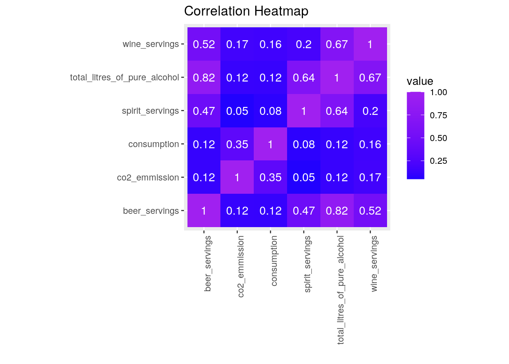
## GGPlots
## Graph 1: Countries Around the World: CO2 Emissions vs Food
## Types
fullCO2dataset %>% ggplot(aes(food_category, co2_emmission, color = country)) +
geom_bar(stat = "summary", fun = mean) + coord_flip() + theme_light(base_size = 15) +
ylab("Total CO2 Emissions(kg CO2/person/year)") + xlab("Food Category") +
theme(panel.grid.major = element_blank(), panel.grid.minor = element_blank(),
panel.border = element_blank(), legend.position = "none") +
ggtitle("Countries Around the World: CO2 Emissions vs Food Types")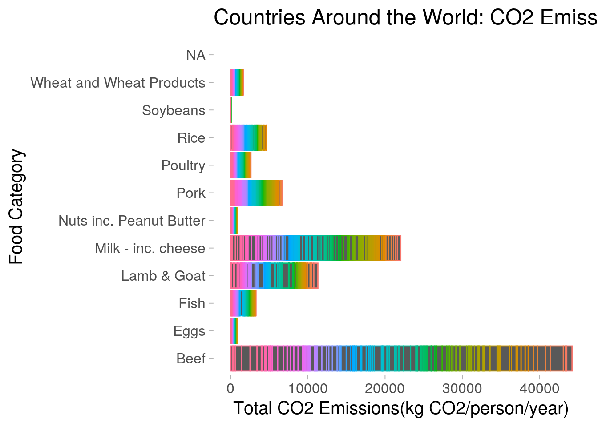
## Graph 2: Alcohol Consumption vs Beer Servings and Spirit
## Servings
fullCO2dataset %>% ggplot(aes(total_litres_of_pure_alcohol, beer_servings)) +
geom_point(aes(color = spirit_servings), size = 2) + scale_color_gradient(low = "green",
high = "purple") + xlab("Liters of Alcohol Consumed(liters/person/year)") +
ylab("Beer Servings") + ggtitle("Alcohol Consumption vs Beer Servings and Spirit Servings") +
theme_bw(base_size = 10) + theme(panel.grid.major = element_blank(),
panel.grid.minor = element_blank(), panel.border = element_blank())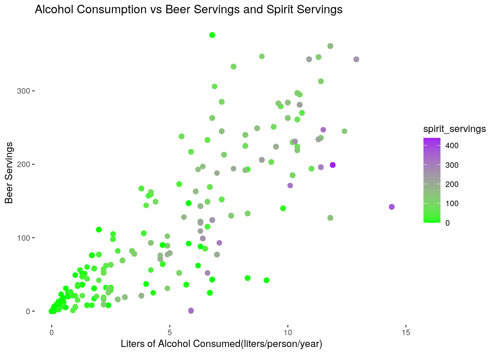
## Graph 3: CO2 Emissions vs Total Liters of Alcohol Consumed
## Based on Food Type and Food Consumption
fullCO2dataset %>% ggplot(aes(co2_emmission, total_litres_of_pure_alcohol)) +
geom_point(aes(color = food_category, size = consumption)) +
theme(panel.grid.major = element_blank(), panel.grid.minor = element_blank(),
panel.border = element_blank(), legend.position = "none") +
xlab("Total CO2 Emissions(kg CO2/person/year)") + ylab("Liters of Alcohol Consumed(liters/person/year)") +
ggtitle("CO2 Emissions vs Total Liters of Alcohol Consumed Based on Food Type and Food Consumption") +
theme_classic(base_size = 8) + scale_y_continuous(breaks = seq(0,
27, 3))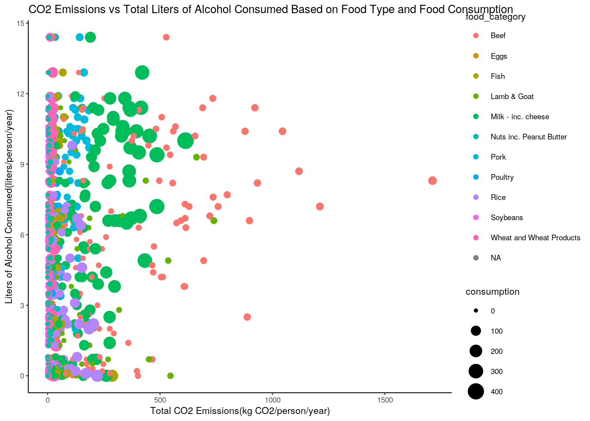 ##
In the Correlation Heatmap of Numeric Variables, the correlation of numeric variables are shown through this visualization by indicating purple is of strong correlation and blue is of weak correlation. Basically, as previously determined, the numeric variables of total liters of pure alcohol consumed and beer servings have the strongest correlation on the map. Next, correlations between the total liters of pure alcohol consumed and wine servings, as well as a correlation between the total liters of pure alcohol consumed and spirit servings. No other strong correlations were visualized from the heatmap. So, my hypothesis stating alcohol consumption and CO2 emission would be correlated is disproved because total liters of pure alcohol consumed and CO2 emissions have a correlation value of 0.35.
In Graph 1: Countries Around the World: CO2 Emissions vs Food Types, the stat summary function was used to show the total CO2 emissions (kg CO2/person/year) for all the countries within this dataset. The countries are displayed through colors along the bar graph. From the graph, we can see that the food category of beef and milk (dairy) result in highest total CO2 emissions. The rainbow of assorted colors throughout these bars indicates that all countries within the dataset are utilizing these food types and are impacting the CO2 emissions. The most significant take away from Graph 1 is that the food categories of Beef, Milk (dairy), and Lamb & Goat are impacting total CO2 emissions in many countries around the world.
In Graph 2: Alcohol Consumption vs Beer Servings and Spirit Servings, the comparison of liters of alcohol consumed per person is compared to the beer servings per person as well as the spirit servings per person. I decided to create a scatterplot like this, due to the findings of the Correlation Heatmap above. From this graph, we can see that yes there is a strong correlation between liters of alcohol consumed and beer servings. Furthermore, we can also see from this scatterplot that there is a strong correlation between liters of alcohol consumed and beer servings. Also, we can see that high spirit servings (purple colored datapoint) are also located along the right side of the scatterplot, potentially indicating that liters of alcohol consumed is correlated with spirit servings as well. The most significant take away from Graph 2 is that there is a strong correlation between liters of alcohol consumed and beer servings, as well as a correlation between liters of alcohol consumed and spirit servings.
In Graph 3: CO2 Emissions vs Total Liters of Alcohol Consumed Based on Food Type and Food Consumption, the relationship between total CO2 emissions vs liters of alcohol consumed with data-points varying on color (food category) and size (food consumption). This graph shows that the beef food category has the highest total CO2 emissions, but around average liters of alcohol consumed, and about medium consumption of the beef. Furthermore, the lamb and goat category has contributed moderately to total CO2 emissions per person and displayed a relatively higher total of liters of alcohol consumed. The large data-points show large consumption of the food category of lamb and goat. The most significant take away from Graph 3 is that we can see which food categories have high total liters of alcohol consumed per person and have high total CO2 emissions per person. Furthermore, we can also see how much of these food categories are being consumed by the data-point size. Since we know there is not a strong correlation between CO2 emissions and liters of alcohol consumed, we do not see a correlation in this scatterplot.
## K-means clustering
library(cluster)
## Determine Number of Clusters for CO2 Emissions and Total
## Liters of Alcohol Consumed
wss <- vector()
for (i in 1:10) {
temp <- fullCO2dataset %>% select(co2_emmission, total_litres_of_pure_alcohol) %>%
na.omit %>% kmeans(i)
wss[i] <- temp$tot.withinss
}
ggplot() + geom_point(aes(x = 1:10, y = wss)) + geom_path(aes(x = 1:10,
y = wss)) + xlab("clusters") + scale_x_continuous(breaks = 1:10) +
ggtitle("Graph 5: Determination of Clusters")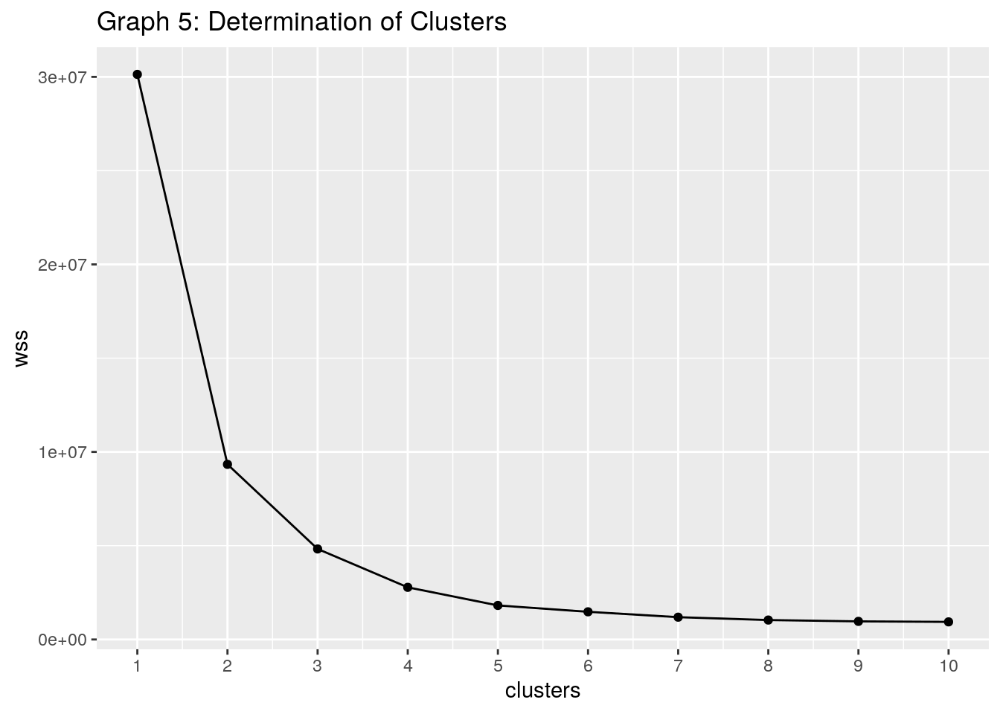
## Clusters for CO2 Emissions and Total Liters of Alcohol
## Consumed
clust_dat1 <- fullCO2dataset %>% dplyr::select(co2_emmission,
total_litres_of_pure_alcohol) %>% na.omit()
kmeans1 <- clust_dat1 %>% kmeans(2)
kmeans1## K-means clustering with 2 clusters of sizes 101, 1241
##
## Cluster means:
## co2_emmission total_litres_of_pure_alcohol
## 1 509.52990 7.420792
## 2 37.69534 5.481950
##
## Clustering vector:
## [1] 2 2 1 2 2 2 1 2 2 2 2 2 2 1 1 2 2 1 2 2 2 2 2 2 1 1 2 2 1 2 2 2 2 2 2 1 1
## [38] 2 2 1 2 2 2 2 2 2 1 1 2 2 2 2 2 2 2 2 2 1 2 2 2 1 2 2 2 2 2 2 1 1 2 2 1 2
## [75] 2 2 2 2 2 1 2 2 2 1 2 2 2 2 2 2 1 2 2 2 2 2 2 2 2 2
## [ reached getOption("max.print") -- omitted 1242 entries ]
##
## Within cluster sum of squares by cluster:
## [1] 5463163 3874960
## (between_SS / total_SS = 69.0 %)
##
## Available components:
##
## [1] "cluster" "centers" "totss" "withinss" "tot.withinss"
## [6] "betweenss" "size" "iter" "ifault"kmeansclust1 <- clust_dat1 %>% mutate(cluster = as.factor(kmeans1$cluster))
kmeansclust1 %>% ggplot(aes(co2_emmission, total_litres_of_pure_alcohol,
color = cluster)) + geom_point() + ggtitle("Graph 6: Clusters for CO2 Emissions vs Total Liters of Pure Alcohol Consumed")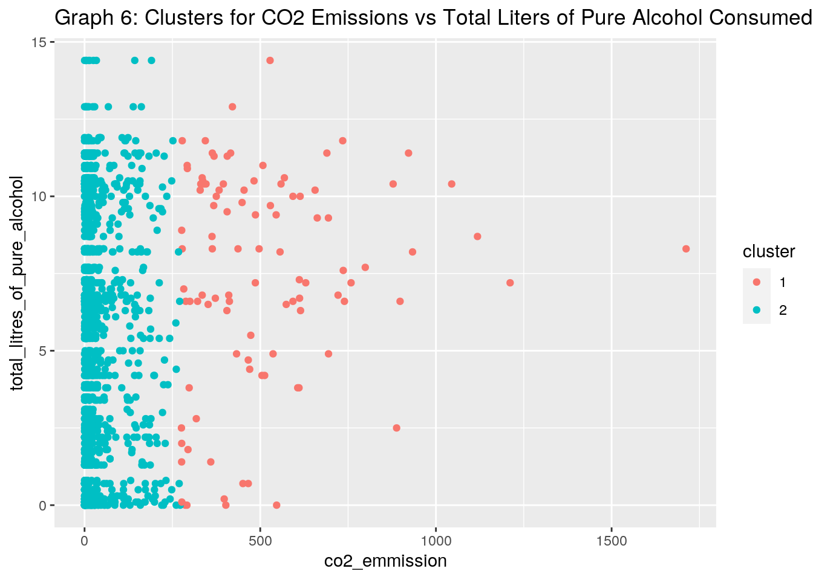
## Determine Number of Clusters for CO2 Emissions and Food
## Consumption
wss <- vector()
for (i in 1:10) {
temp <- fullCO2dataset %>% select(co2_emmission, consumption) %>%
na.omit %>% kmeans(i)
wss[i] <- temp$tot.withinss
}
ggplot() + geom_point(aes(x = 1:10, y = wss)) + geom_path(aes(x = 1:10,
y = wss)) + xlab("clusters") + scale_x_continuous(breaks = 1:10) +
ggtitle("Graph 7: Determination of Clusters")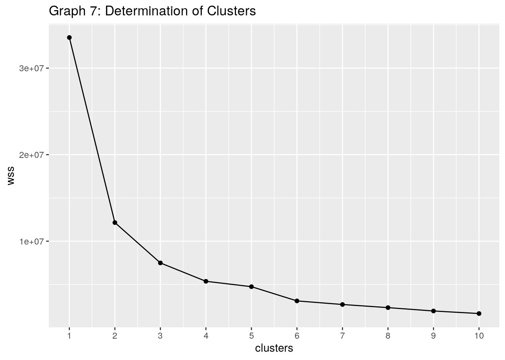
## Clusters for CO2 Emissions and Food Consumption
clust_dat2 <- fullCO2dataset %>% dplyr::select(co2_emmission,
consumption) %>% na.omit()
kmeans2 <- clust_dat2 %>% kmeans(2)
kmeans2## K-means clustering with 2 clusters of sizes 102, 1240
##
## Cluster means:
## co2_emmission consumption
## 1 506.79245 103.85873
## 2 37.54001 21.68779
##
## Clustering vector:
## [1] 2 2 1 2 2 2 1 2 2 2 2 2 2 1 1 2 2 1 2 2 2 2 2 2 1 1 2 2 1 2 2 2 2 2 2 1 1
## [38] 2 2 1 2 2 2 2 2 2 1 1 2 2 2 2 2 2 2 2 2 1 2 2 2 1 2 2 2 2 2 2 1 1 2 2 1 2
## [75] 2 2 2 2 2 1 2 2 2 1 2 2 2 2 2 2 1 2 2 2 2 2 2 2 2 2
## [ reached getOption("max.print") -- omitted 1242 entries ]
##
## Within cluster sum of squares by cluster:
## [1] 6882521 5265733
## (between_SS / total_SS = 63.8 %)
##
## Available components:
##
## [1] "cluster" "centers" "totss" "withinss" "tot.withinss"
## [6] "betweenss" "size" "iter" "ifault"kmeansclust2 <- clust_dat2 %>% mutate(cluster = as.factor(kmeans2$cluster))
kmeansclust2 %>% ggplot(aes(co2_emmission, consumption, color = cluster)) +
geom_point() + ggtitle("Graph 8: Clusters for CO2 Emissions vs Food Consumption")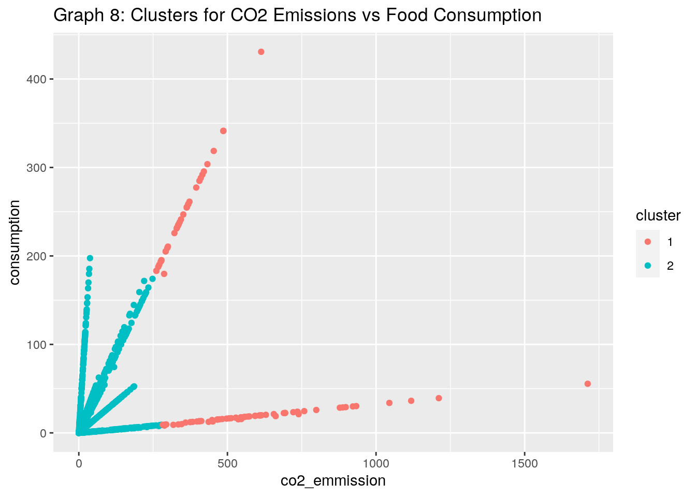
## Determine Number of Clusters for Beer Servings and Wine
## Servings
wss <- vector()
for (i in 1:10) {
temp <- fullCO2dataset %>% select(beer_servings, wine_servings) %>%
na.omit %>% kmeans(i)
wss[i] <- temp$tot.withinss
}
ggplot() + geom_point(aes(x = 1:10, y = wss)) + geom_path(aes(x = 1:10,
y = wss)) + xlab("clusters") + scale_x_continuous(breaks = 1:10) +
ggtitle("Graph 9: Determination of Clusters")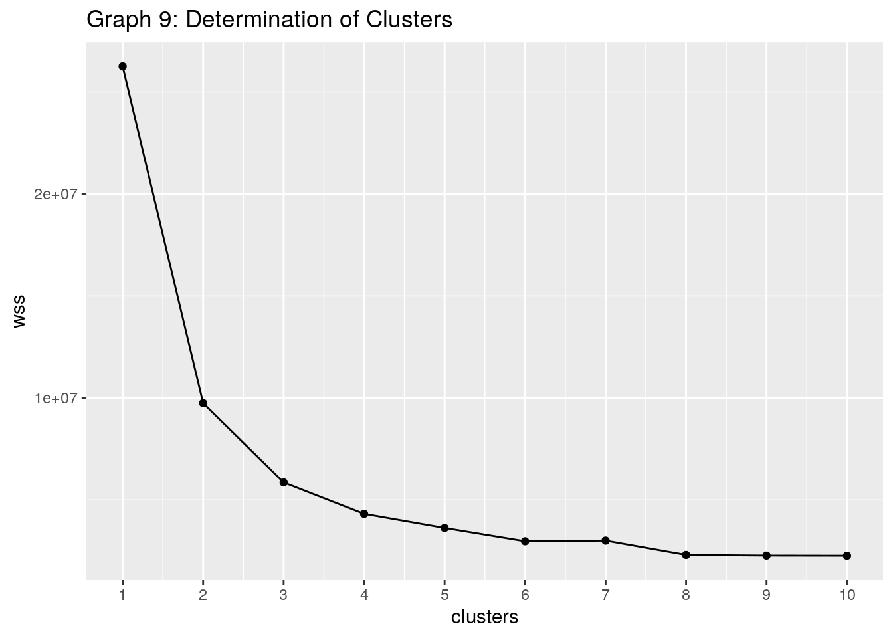
## Clusters for Beer Servings and Wine Servings
clust_dat3 <- fullCO2dataset %>% dplyr::select(beer_servings,
wine_servings) %>% na.omit()
kmeans3 <- clust_dat3 %>% kmeans(2)
kmeans3## K-means clustering with 2 clusters of sizes 558, 855
##
## Cluster means:
## beer_servings wine_servings
## 1 236.09677 140.43011
## 2 57.01404 10.72982
##
## Clustering vector:
## [1] 1 1 1 1 1 1 1 1 1 1 1 1 1 1 1 1 1 1 1 1 1 1 2 2 2 2 2 2 2 2 2 2 2 1 1 1 1
## [38] 1 1 1 1 1 1 1 1 1 1 1 1 1 1 1 1 1 1 1 1 1 1 1 1 1 1 1 1 1 1 1 1 1 1 1 1 1
## [75] 1 1 1 1 1 1 1 1 1 1 1 1 1 1 1 1 1 1 1 1 1 1 1 1 1 2
## [ reached getOption("max.print") -- omitted 1313 entries ]
##
## Within cluster sum of squares by cluster:
## [1] 7101236 2644368
## (between_SS / total_SS = 62.9 %)
##
## Available components:
##
## [1] "cluster" "centers" "totss" "withinss" "tot.withinss"
## [6] "betweenss" "size" "iter" "ifault"kmeansclust3 <- clust_dat3 %>% mutate(cluster = as.factor(kmeans3$cluster))
kmeansclust3 %>% ggplot(aes(beer_servings, wine_servings, color = cluster)) +
geom_point() + ggtitle("Graph 10: Clusters for Beer Servings vs Spirit Servings")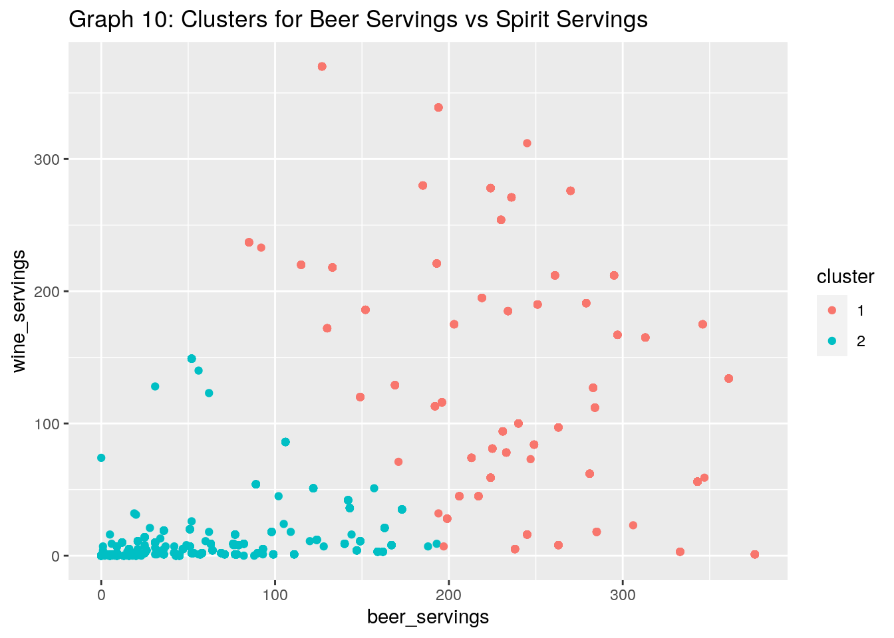
## k-means clustering for three variables
wss <- vector()
for (i in 1:10) {
temp <- fullCO2dataset %>% select(beer_servings, spirit_servings,
wine_servings) %>% na.omit %>% kmeans(i)
wss[i] <- temp$tot.withinss
}
ggplot() + geom_point(aes(x = 1:10, y = wss)) + geom_path(aes(x = 1:10,
y = wss)) + xlab("clusters") + scale_x_continuous(breaks = 1:10) +
ggtitle("Graph 11: Determination of Clusters")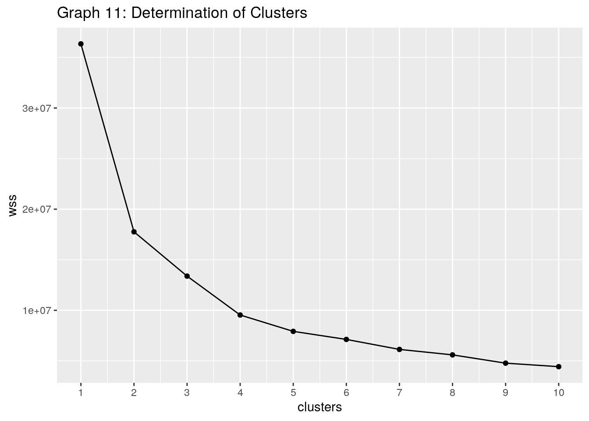
## Clusters for Beer Servings vs Spirit Servings vs Wine
## Servings
clust_dat4 <- fullCO2dataset %>% dplyr::select(beer_servings,
spirit_servings, wine_servings) %>% na.omit()
kmeans4 <- clust_dat4 %>% kmeans(3)
kmeans4## K-means clustering with 3 clusters of sizes 269, 488, 656
##
## Cluster means:
## beer_servings spirit_servings wine_servings
## 1 133.63941 196.69888 27.486989
## 2 238.97951 107.34426 152.129098
## 3 42.55793 24.20122 8.995427
##
## Clustering vector:
## [1] 2 2 2 2 2 2 2 2 2 2 2 2 2 2 2 2 2 2 2 2 2 2 1 1 1 1 1 1 1 1 1 1 1 2 2 2 2
## [38] 2 2 2 2 2 2 2 2 2 2 2 2 2 2 2 2 2 2 2 2 2 2 2 2 2 2 2 2 2 2 2 2 2 2 2 2 2
## [75] 2 2 2 2 2 2 2 2 2 2 2 2 2 2 1 1 1 1 1 1 1 1 1 1 1 1
## [ reached getOption("max.print") -- omitted 1313 entries ]
##
## Within cluster sum of squares by cluster:
## [1] 3294376 7738517 2349728
## (between_SS / total_SS = 63.2 %)
##
## Available components:
##
## [1] "cluster" "centers" "totss" "withinss" "tot.withinss"
## [6] "betweenss" "size" "iter" "ifault"kmeansclust4 <- clust_dat4 %>% mutate(cluster = as.factor(kmeans4$cluster))
kmeansclust4 %>% ggplot(aes(beer_servings, spirit_servings, wine_servings,
color = cluster)) + geom_point() + ggtitle("Graph 12: Clustering of Beer Servings vs Spirit Servings vs Wine Servings")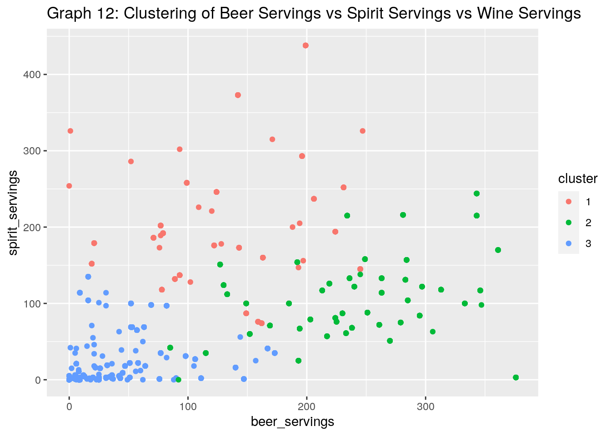
For the dimensionality reduction aspect of this project, I used the K-means clustering to cluster the data. The steps for this process are the following: Pick k points at random to serve as initial cluster centers. Assign each of your n observations to the cluster whose center is closest. For each group, calculate mean of each variable/dimension; use as new cluster centers.Repeat steps until group stabilize. To begin clustering for my full dataset, I first wrote code to help determine the number of clusters that would be useful for each analysis. By using a plot with WSS vs k (number of clusters), I was able to visualize the “elbow” which would indicate the best number of clusters for that set of numeric variables. For all of these analyses, the best number of clusters was 2. This can be seen in graphs 5, 7, and 9. Furthermore, after determining the best number of clusters for each set, k-means clustering can be used. Graphs 6, 8, and 10 show clusters created for those numeric variables. In graph 6, two clusters are created for the data of CO2 emissions compared to total liters of pure alcohol consumed. In graph 8, two clusters are created for the data of CO2 emissions compared to consumption of food types. In graph 10, two clusters are created for the data of beer servings compared to wine servings. Furthermore, k-means clustering was performed on three numeric variables in the similar manner as before. The k value was determined to be 3 after visualizing the data on graph 11. Graph 12 shows the 3 clusters for the variables beer servings, spirit servings, and wine servings.